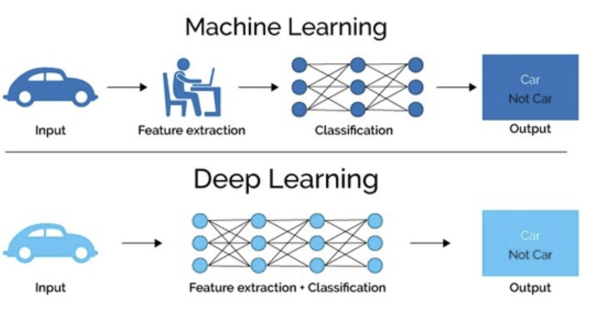

深度学习¶
学习目标
- 知道什么是深度学习
- 知道深度学习的应用场景

1.什么是深度学习¶
在介绍深度学习之前，我们先看下人工智能，机器学习和深度学习之间的关系：
机器学习是实现人工智能的一种途径，深度学习是机器学习的一个子集，也就是说深度学习是实现机器学习的一种方法。与机器学习算法的主要区别如下图所示：

传统机器学习算术依赖人工设计特征，并进行特征提取，而深度学习方法不需要人工，而是依赖算法自动提取特征。深度学习模仿人类大脑的运行方式，从经验中学习获取知识。这也是深度学习被看做黑盒子，可解释性差的原因。
随着计算机软硬件的飞速发展，现阶段通过深度学习来模拟人脑来解释数据，包括图像，文本，音频等内容。目前深度学习的主要应用领域有：
- 智能手机
- 语音识别
比如苹果的智能语音助手siri
- 机器翻译
谷歌将深度学习方法嵌入到谷歌翻译中，能够支持100多种语言的即时翻译。
- 拍照翻译
- 自动驾驶
当然在其他领域也能见到深度学习的身影，比如风控，安防，智能零售，医疗领域，推荐系统等。
在该课程中，我们主要介绍：
- 深度学习框架TensorFlow的应用
- 深度神经网络
两部分内容。
2 发展历史（了解）¶

- 深度学习其实并不是新的事物，深度学习所需要的神经网络技术起源于20世纪50年代，叫做感知机。当时也通常使用单层感知机，尽管结构简单，但是能够解决复杂的问题。后来感知机被证明存在严重的问题，因为只能学习线性可分函数，连简单的异或(XOR)等线性不可分问题都无能为力，1969年Marvin Minsky写了一本叫做《Perceptrons》的书，他提出了著名的两个观点：1.单层感知机没用，我们需要多层感知机来解决复杂问题 2.没有有效的训练算法。
- 20世纪80年代末期，用于人工神经网络的反向传播算法（也叫Back Propagation算法或者BP算法）的发明，给机器学习带来了希望，掀起了基于统计模型的机器学习热潮。这个热潮一直持续到今天。人们发现，利用BP算法可以让一个人工神经网络模型从大量训练样本中学习统计规律，从而对未知事件做预测。这种基于统计的机器学习方法比起过去基于人工规则的系统，在很多方面显出优越性。这个时候的人工神经网络，虽也被称作多层感知机（Multi-layer Perceptron），但实际是种只含有一层隐层节点的浅层模型。
- 20世纪90年代，各种各样的浅层机器学习模型相继被提出，例如支撑向量机（SVM，Support Vector Machines）、 Boosting、最大熵方法（如LR，Logistic Regression）等。这些模型的结构基本上可以看成带有一层隐层节点（如SVM、Boosting），或没有隐层节点（如LR）。这些模型无论是在理论分析还是应用中都获得了巨大的成功。相比之下，由于理论分析的难度大，训练方法又需要很多经验和技巧，这个时期浅层人工神经网络反而相对沉寂.
- 2006年，杰弗里·辛顿以及他的学生鲁斯兰·萨拉赫丁诺夫正式提出了深度学习的概念。他们在世界顶级学术期刊《科学》发表的一篇文章中详细的给出了“梯度消失”问题的解决方案——通过无监督的学习方法逐层训练算法，再使用有监督的反向传播算法进行调优。该深度学习方法的提出，立即在学术圈引起了巨大的反响，以斯坦福大学、多伦多大学为代表的众多世界知名高校纷纷投入巨大的人力、财力进行深度学习领域的相关研究。而后又迅速蔓延到工业界中。
-
2012年，在著名的ImageNet图像识别大赛中，杰弗里·辛顿领导的小组采用深度学习模型AlexNet一举夺冠。AlexNet采用ReLU激活函数，从根本上解决了梯度消失问题，并采用GPU极大的提高了模型的运算速度。同年，由斯坦福大学著名的吴恩达教授和世界顶尖计算机专家Jeff Dean共同主导的深度神经网络——DNN技术在图像识别领域取得了惊人的成绩，在ImageNet评测中成功的把错误率从26％降低到了15％。深度学习算法在世界大赛的脱颖而出，也再一次吸引了学术界和工业界对于深度学习领域的关注。
-
2016年，随着谷歌公司基于深度学习开发的AlphaGo以4:1的比分战胜了国际顶尖围棋高手李世石，深度学习的热度一时无两。后来，AlphaGo又接连和众多世界级围棋高手过招，均取得了完胜。这也证明了在围棋界，基于深度学习技术的机器人已经超越了人类。
-
2017年，基于强化学习算法的AlphaGo升级版AlphaGo Zero横空出世。其采用“从零开始”、“无师自通”的学习模式，以100:0的比分轻而易举打败了之前的AlphaGo。除了围棋，它还精通国际象棋等其它棋类游戏，可以说是真正的棋类“天才”。此外在这一年，深度学习的相关算法在医疗、金融、艺术、无人驾驶等多个领域均取得了显著的成果。所以，也有专家把2017年看作是深度学习甚至是人工智能发展最为突飞猛进的一年。
-
2019年，基于Transformer 的自然语言模型的持续增长和扩散，这是一种语言建模神经网络模型，可以在几乎所有任务上提高NLP的质量。Google甚至将其用作相关性的主要信号之一，这是多年来最重要的更新
-
2020年，深度学习扩展到更多的应用场景，比如积水识别，路面塌陷等，而且疫情期间，在智能外呼系统，人群测温系统，口罩人脸识别等都有深度学习的应用。
总结
- 深度学习是什么
深度学习是机器学习算法的一种，通过模拟人脑实现相应的功能
- 深度学习应用场景
手机，机器翻译，自动驾驶，语音识别，医疗，安防等。